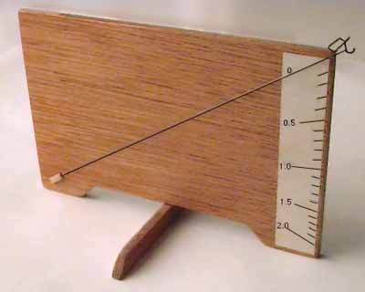

Quickly fashioned with a scrap of plywood and a bit of wire from the local hobby shop, this scale is very handy at the flying site for checking weights of motors. If you are lucky enough to find a copy of Ron Williams out of print book, "Building and Flying Indoor Model Airplanes", there is a set of construction notes enclosed. A glance at the picture ought to be enough for most modelers as well. Note the end of the wire is bent with a hook, as well as a bracket to hold stripwood. The "foot" pivots on a metal pin to fold out of the way for storage.
Calibration is done with known reference weights. Capacity and resolution are functions of wire diameter, length, and your own patience with the reference weights. FWIW, mine has a length of 0.015 music wire about 6" long and a max capacity of 2 grams.
Copyright 1998, Thayer Syme. All rights reserved